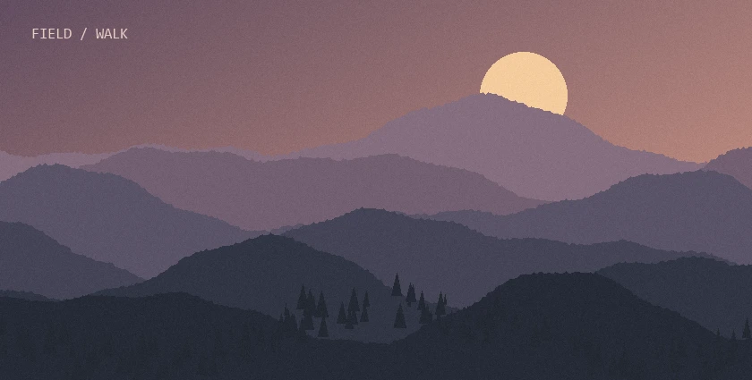

给这段路留一点空白
散步可以从一个很小的约束开始。走过第一个路口以前，先不打开音乐。注意脚步落在什么表面，远处的声音有没有被转角挡住。熟悉的路很快就会多出几层。
如果只记一个细节，可以选最短暂的那个。比如车轮压过一块松动的砖，前轮响一下，后轮又响一下，中间的间隔恰好能听出车速。
把感受写成可辨认的东西
“今天的傍晚很好看”很难在几个月后还原出画面。换成“最后一束光只照到楼梯扶手，台阶已经变灰”，那一小段时间就有了形状。
给声音做笔记也一样。试着写下它从哪个方向来，持续了多久，最后又被什么盖住。用这些问题去听，平常的背景声也有了开始和结束。
回来以后
把一段路整理成三个词、一张照片，或者一句足够具体的话，都可以。下次走同一条路时，先回想那句话，再看看什么变了。重复走过的路线由此成了一份慢慢累积的记录。
继续阅读
用噪声，造一颗星球。